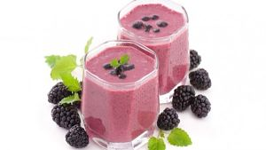
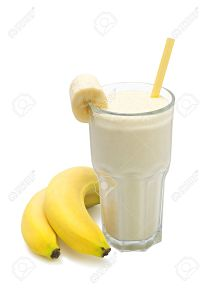

En este ocal comercial te ofrecemos la mas ricos y deliciosos batidos. los vatidos son de multiples sabores. Nuestro mejor batido que contenemos es el de coco ademas, tenemos otros que son muy delicioso que es el de mora, frutilla, banana.
Ademas contamos con la venta del acopañante del batido que son las tostadas posemos tostadas de variados precios desde la mas economica hasta la mas carita.
Batido de coco |
Como ya mas anten mecionado tenemos en batido de coco. Este batido esta preparado con su ingrediente principal que es el coco ademas, se le aplica escencia de vainilla,azucar y hielo para que salga con una tectura cremosita. su precio es tan solo de "50 centavos y con tostada 1 dolar". |
 Ingredientes
Ingredientes
1.-Una taza de leche
2.-Media taza de coco desidratado
3.-50 Gramos de azucar
4.-Una pisca de canela en polvo
5.-Escencia de vainilla liquida
|

Batido de mora |
Este batido es de consistencia muy especial debido aque mucho de nuestros clientes lo piden por su maravilloso sabor y ademas, por que tiene una gran cantidad de vitaminas para las personas que practican algun deporte en especial su precio es de "50 centavos y con tostada 1 dolar". |

ingredientes
1.-Leche
2.-Moras negras
3.-Yogur natural
4.-Azucal
|
Batido de frutilla |
El batido de fresas o frutilla tiene un savor maravilloso y consistencia fenomenal ademas, se alia con cualquiera de nuestra tostadas"50 centavos y con tostada 1 dolar". |
 ingredientes
ingredientes
1.-Fresas frescas
2.-Leche
3.-Azucar
4.-Hielo picado
|
Batidos guineos. |
El batido de banana es uno de los batidos mas clasicos conocidos por las personas este batido contiene como uno de su ingredientes principales la lecha ademas se le aplica escencia sabor a bainilla y con una cierta cantidad de azucar sim embargo, aplicarle la azucar es opcional por el cliente por que el banano es una de las que su abor es bastante dulce"50 centavos y con tostada 1 dolar". |

ingredientes
1.-Guineos o bananas maduras
2.-azucar
3.-Una cucharada de esencia de vainilla
4.-Dos tazas de leche
5.-Hielo picado
|
Como puedo hacer pedidos a domicilio? |
Hola damos la cordial bienbenida a nuestro localde batidos y tostadas online. Usted para poder hacer pedido a domicilio tiene que contactarnos por whatsapp |

|
inicio -
facebook -
presiona -
contactos
Batidos S.A 2020 mandanos un mensaje via email a
anibalsoriano207@gmail
|